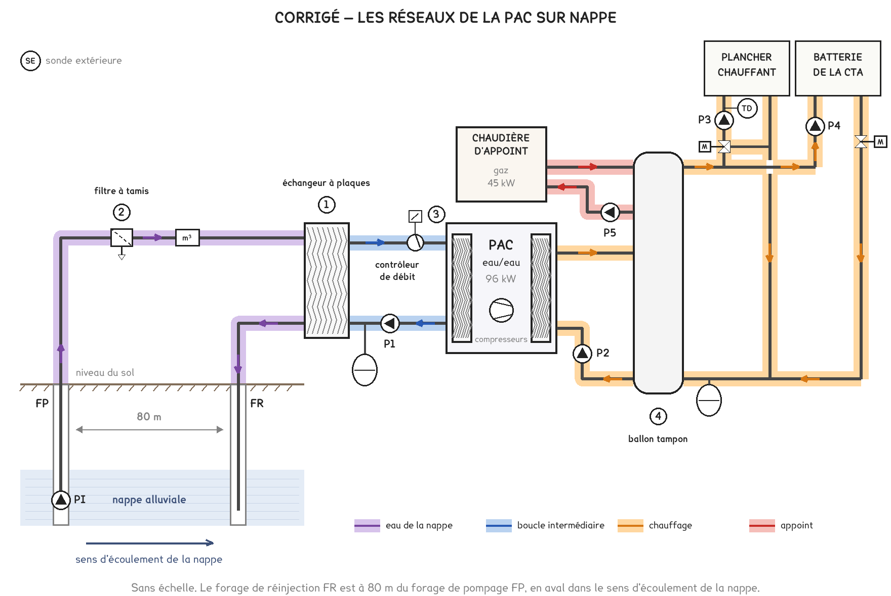
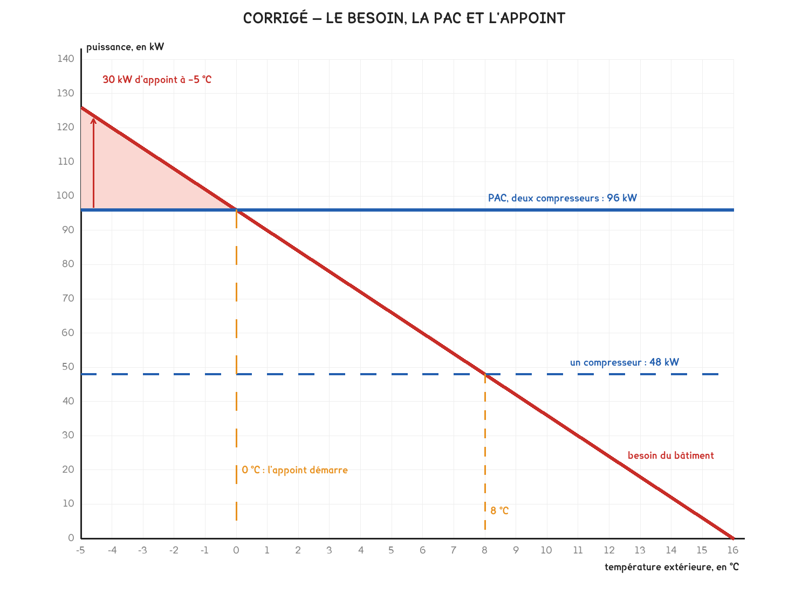

Document de formation du professeur — ne pas diffuser aux étudiants
Formation du professeur · BTS FED option C
Le corrigé barémé d'un exercice au format de l'épreuve : une PAC eau/eau sur nappe, l'échangeur intermédiaire, le débit de nappe, le ballon tampon, le contrôleur de débit, l'appoint et le temps de retour.
| Savoirs | Niveau DBC |
|---|---|
| B1-1 Production de chaleur, PAC | 3, maîtrise d’outils |
| B1-2 Émission, plancher chauffant | 3, maîtrise d’outils |
| A5-1 Machine thermodynamique, COP | 2 : expression |
| B4-1 Réseaux hydrauliques, typologie | 2 : expression |
| A5-3 Fluides frigorigènes, GWP | 1 : information |
UN CAS CONSTRUIT, PAS UNE INSTALLATION RELEVÉE
La médiathèque, sa nappe et sa PAC sont inventées, sur le modèle des questions de PAC des sessions 2018, 2019, 2021, 2023 et 2025. La notice du DT3 n’est celle d’aucune machine du commerce : ses COP restent dans l’ordre de grandeur d’une PAC eau/eau, 0,44 à 0,45 fois le COP de Carnot des mêmes températures d’eau. Les valeurs sont recalculées par
figs-exo-pac.py --valeurs, qui trace aussi les figures : les lectures du DR2 tombent sur celles du corrigé.
| Moment | Ce qu’on en fait |
|---|---|
| Après les séances 12 et 13 | En entraînement, 1 h 30, les documents indiqués dans chaque question |
| Avec la fiche « Une saison de pompe à chaleur » | La question 11 la prolonge : une source qui ne se refroidit pas, et un appoint qui ne répond plus qu’au besoin |
| Avant la séance 26 | Le sujet 2025, traité en séance 26, a lui aussi un forage sur nappe : cet exercice en prépare la partie 2 sans la déflorer |
Minutage conseillé : 1 h 30. Parties 1 et 2 en 35 minutes, partie 3 en 30 minutes, partie 4 en 25 minutes. Les parties sont indépendantes : un étudiant bloqué sur le ballon passe au budget.
Ce qu’on ne sacrifie jamais : les questions 8 et 9, le ballon tampon. Il revient dans quatre sujets, 2018, 2019, 2021 et 2023, et c’est l’organe que les étudiants décrivent le plus mal : « il stocke de la chaleur » ne dit ni pourquoi ni combien. La 8 le chiffre avec la relation du corrigé 2018, la 9 dit où l’on s’y raccorde et pourquoi.
Barème indicatif, format des corrigés U41 depuis 2022 : chaque question est cotée de 0 à 3 selon le nombre d’éléments attendus présents. Éval 0 aucun, Éval 1 un élément, Éval 2 deux, Éval 3 tous.
1.
| Repère | Désignation | Fonction |
|---|---|---|
| 1 | Échangeur à plaques démontable | Transmettre la chaleur de l’eau de la nappe à la boucle intermédiaire sans que les deux liquides se touchent ; démontable, il se nettoie |
| 2 | Filtre à tamis, avec sa purge | Retenir le sable et les particules de l’eau de nappe avant l’échangeur ; la purge évacue ce qu’il a retenu |
| 3 | Contrôleur de débit | Vérifier qu’il passe assez de liquide dans l’évaporateur, et interdire la marche des compresseurs sinon |
| 4 | Ballon tampon | Ajouter du volume d’eau au circuit pour que chaque compresseur fasse des cycles assez longs |
Éléments attendus : l’échangeur et la séparation des deux liquides · le filtre et la protection de l’échangeur · le contrôleur et l’arrêt des compresseurs · le ballon et les cycles longs. Raccordé par quatre piquages, le ballon rend aussi indépendants les débits de la PAC et ceux des circuits, comme une bouteille de découplage : c’est un plus.
2. Le tableau du DR1 :
| Réseau | Régime de température | Rôle |
|---|---|---|
| Eau de la nappe | Prélevée à 12 °C, réinjectée à 7 °C | La source de chaleur : elle cède sa chaleur dans l’échangeur, puis retourne à la nappe |
| Boucle intermédiaire | 10 °C vers l’évaporateur, 5 °C au retour | Porter la chaleur de l’échangeur à l’évaporateur de la PAC |
| Circuit de chauffage | Départ 35 °C, retour 30 °C | Porter la chaleur du condenseur, par le ballon, au plancher et à la batterie de la CTA |
Éléments attendus : quatre réseaux distincts et complets · les flèches, dont la descente vers FR · les trois régimes et les rôles. La boucle intermédiaire de la même couleur que la nappe est l’erreur à relever : ce sont deux liquides qui ne se touchent jamais, et c’est tout l’objet de la question 3.
Le schéma surligné :

3. Trois raisons, qui tiennent chacune au dossier.
L’arrêté : l’eau doit revenir à la nappe modifiée seulement par sa température. Sans échangeur, elle traverserait l’évaporateur, et une fuite de celui-ci mêlerait à la nappe du fluide frigorigène ou de l’huile. Avec l’échangeur, l’eau de la nappe ne touche que des plaques d’acier inoxydable.
L’eau chargée : elle contient du fer et du sable fin. Elle encrasserait et corroderait l’évaporateur, brasé, qu’on ne peut pas ouvrir. L’échangeur démontable prend cet encrassement à sa place et se nettoie chaque année.
Le gel : la boucle intermédiaire est glycolée, ce qu’on ne peut pas faire à l’eau d’une nappe. L’évaporateur travaille alors près de 0 °C sans geler.
Le prix payé : l’échangeur prend 2 K à la source, la PAC voit 10 °C quand la nappe en donne 12, soit environ 5 % de COP, à raison de 2 à 3 % par kelvin, plus l’électricité de P1.
Éléments attendus : l’arrêté et la nappe à protéger · l’eau chargée, qui encrasserait un évaporateur qu’on ne peut pas ouvrir · le glycol, possible dans la boucle et interdit dans la nappe. Le corrigé officiel de 2025 ne demandait que la première raison.
4. DT3, colonne 35 °C : la PAC absorbe 17,8 kW. COP = 96 / 17,8 ≈ 5,4. Le condenseur rend la chaleur prise à la nappe plus l’énergie électrique du compresseur :
P nappe = 96 − 17,8 = 78,2 kW.
Éléments attendus : la lecture de 17,8 kW · le COP · le bilan, condenseur = évaporateur + compresseur. « P nappe = 96 kW » oublie que l’électricité finit elle aussi en chaleur : Éval 1.
5. qv = P / (1,163 × Δθ) = 78,2 / (1,163 × 5) ≈ 13,4 m³/h. Le forage donne 15 m³/h : il suffit, à 90 % de son débit conseillé. La marge est mince : un échangeur encrassé ou une nappe plus froide la mangent vite.
Sur l’année, la nappe fournit de l’ordre de 116 MWh, pour un COP moyen de la machine seule voisin de 5, soit environ 20 000 m³ prélevés puis rendus. C’est l’ordre de grandeur du sujet 2025, qui annonçait 19 000 à 21 000 m³ par an.
Éléments attendus : la formule avec la puissance prélevée, 78,2 kW · Δθ = 5 K · la comparaison avec 15 m³/h. Le débit calculé avec 96 kW donne 16,5 m³/h et fait conclure à tort que le forage ne suffit pas : Éval 1, la méthode étant juste.
6. À 80 m : l’eau réinjectée, à 7 °C, forme dans la nappe une zone plus froide. Si elle atteignait le forage de pompage, la PAC pomperait une eau de plus en plus froide, année après année, et son COP comme sa puissance baisseraient. La distance évite ce recyclage thermique. En aval : la nappe s’écoule, et elle emporte cette eau froide loin de FP au lieu de la ramener vers lui.
La réinjection elle-même tient le niveau de la nappe : chaque mètre cube pris lui est rendu, comme l’exige l’arrêté.
Éléments attendus : l’eau rendue plus froide · le risque de la repomper, et le COP qui baisse · l’écoulement qui l’emporte loin de FP.
7. COP à 55 °C = 84 / 26,3 ≈ 3,2, contre 5,4 à 35 °C. Pour la même chaleur, des radiateurs en 55/45 °C demanderaient 5,4 / 3,2 ≈ 1,7 fois plus d’électricité : le plancher en consomme 41 % de moins. La PAC perdrait aussi 12 kW de puissance, 84 kW au lieu de 96, et la chaudière d’appoint travaillerait davantage.
Éléments attendus : les deux COP · la comparaison chiffrée, en rapport ou en pourcentage · le lien entre une eau de départ basse et un COP élevé. La puissance perdue est un plus.
8. Quand les circuits ne prennent rien, toute la chaleur du compresseur va dans le ballon. Un compresseur fournit 96 / 2 = 48 kW. Le ballon absorbe, sur le différentiel de 5 K :
E = 1,163 × 1 000 × 5 = 5 815 Wh, soit 5,8 kWh.
Durée de marche : 5,8 / 48 ≈ 0,121 h, soit 7,3 minutes, plus que les 6 minutes exigées : le ballon suffit. À l’inverse, 6 minutes à 48 kW demandent 4,8 kWh, donc un ballon d’au moins 825 L. C’est la relation du corrigé 2018, V = P × t / (c × Δθ).
Dès que les circuits prennent une part de la chaleur, la marche s’allonge : l’hypothèse « aucune demande » est le cas le plus défavorable.
Éléments attendus : la puissance d’un seul compresseur, 48 kW · l’énergie stockée sur 5 K · la durée comparée à 6 minutes. Le calcul fait avec 96 kW donne 3,6 minutes et conclut à tort que le ballon est trop petit : Éval 1, la méthode étant juste.
9. Le ballon est stratifié : l’eau chaude, plus légère, reste en haut, l’eau la plus froide en bas.
Le retour de la PAC en bas : la PAC reçoit l’eau la plus froide du ballon, elle condense à plus basse température, et son COP s’améliore.
La chaudière en haut : elle ne chauffe que le haut du ballon, là où les circuits prennent leur départ. Elle relève la température de départ sans réchauffer l’eau qui retourne à la PAC. Raccordée en bas, elle enverrait de l’eau chaude à la PAC : COP en baisse, et arrêt possible sur la sécurité haute pression.
C’est l’idée de la chaufferie du collège, question 9 : tout ce qui réchauffe le retour d’un générateur lui coûte du rendement.
Éléments attendus : la stratification · l’eau la plus froide vers la PAC, et son COP · la chaudière qui ne réchauffe pas le retour de la PAC.
10. Fonction : vérifier qu’il passe assez d’eau glycolée dans l’évaporateur avant et pendant la marche des compresseurs.
Le risque : sans débit, le liquide immobile dans l’évaporateur continue de céder sa chaleur au fluide frigorigène et se refroidit très vite. L’eau glycolée à 25 % gèle vers −10 °C, et l’évaporation peut descendre plus bas : la glace déforme ou perce les plaques, le fluide frigorigène passe dans la boucle, et la PAC est perdue. Sans aller jusqu’au gel, la machine déclenche en basse pression.
Deux causes parmi : la pompe P1 arrêtée ou en panne · une vanne restée fermée après un entretien · de l’air dans la boucle · une fuite qui fait chuter la pression de la boucle.
Les actions de l’automate, relevées dans le DT3 : arrêt immédiat des compresseurs · affichage du défaut « débit évaporateur » · redémarrage automatique 3 minutes après le retour du débit · verrouillage au troisième défaut en 24 heures, avec réarmement sur place. Renvoyer le défaut vers la GTB est un plus.
Éléments attendus : la fonction · le gel ou la basse pression · deux causes · les actions du DT3.
11. Le graphe tracé :

Le besoin passe par 126 kW à −5 °C et par 0 kW à 16 °C. La PAC donne 96 kW quelle que soit la température extérieure. Les deux droites se croisent à 0 °C : sous 0 °C, l’appoint démarre. À −5 °C, il fournit 126 − 96 = 30 kW, que la chaudière de 45 kW couvre.
La puissance ne baisse pas parce que la PAC prend sa chaleur dans la nappe, à 12 °C toute l’année, et non dans l’air extérieur : sa source ne se refroidit pas quand il gèle dehors. Une PAC air/eau perd au contraire de la puissance au moment où le besoin monte, ce que montre la fiche « Une saison de pompe à chaleur ».
Au-dessus de 8 °C, le besoin reste sous 48 kW et un seul compresseur tourne, par cycles : c’est là que travaille le ballon de la question 8.
Éléments attendus : les deux tracés justes · 0 °C et 30 kW, lus à 1 °C et 5 kW près · la source à température constante.
12. 2 × 8,2 = 16,4 kg ; 16,4 × 675 / 1 000 ≈ 11,1 t éq. CO₂. Entre 5 et 50 t : contrôle d’étanchéité au moins tous les 12 mois. Avec un système de détection des fuites, le contrôle reste obligatoire, tous les 24 mois ; le détecteur signale en plus une fuite dès qu’elle survient, avant que la PAC ait perdu sa charge et son COP.
Éléments attendus : la charge des deux circuits · le calcul en tonnes · les deux fréquences, 12 et 24 mois. La charge d’un seul circuit, 5,5 t, donne ici la même fréquence par chance : exiger les deux circuits.
13. Chaufferie gaz seule : 150 000 / 0,90 = 166 667 kWh de gaz, soit 15 000 € par an.
Solution PAC : électricité 150 000 × 0,97 / 4,5 ≈ 32 333 kWh, soit 6 467 € ; gaz de l’appoint 150 000 × 0,03 / 0,90 = 5 000 kWh, soit 450 € ; entretien 1 800 €. Total : environ 8 717 € par an.
Économie : 15 000 − 8 717 ≈ 6 283 € par an. Temps de retour : 70 000 / 6 283 ≈ 11,1 ans, sous les 12 ans exigés : la solution est acceptable.
La marge est faible : à 0,24 €/kWh d’électricité, le temps de retour passe à 14 ans. La bonne conclusion est donc nuancée : acceptable aux prix du jour, sensible au prix de l’électricité.
Éléments attendus : le coût de la solution gaz · celui de la solution PAC, avec l’appoint et l’entretien · le temps de retour et la conclusion. Un poste oublié, l’appoint ou l’entretien, gonfle l’économie ; la conclusion reste juste par chance : Éval 2.
| Ce qu’on observe | Questions | Ce qu’on reprend |
|---|---|---|
| La nappe et la boucle d’une seule couleur | 2, 3 | Deux liquides qui ne se touchent jamais, et l’arrêté qui l’impose |
| La puissance prise à la nappe égale à 96 kW | 4, 5 | Le bilan de la machine : condenseur = évaporateur + compresseur |
| « Pour que les forages ne se gênent pas », sans dire en quoi | 6 | L’eau froide rendue à la nappe, et la nappe qui s’écoule |
| Le ballon qui « stocke de la chaleur » sans chiffre, ou calculé avec 96 kW | 8 | Le cas le plus défavorable : un seul compresseur, 48 kW, et aucune demande |
| Le COP de 5,4 employé à la place du SCOP de 4,5 | 13 | Un COP à pleine charge est un point d’essai ; la facture suit le SCOP |
L'énoncé élève est le document Word EXO-PAC-MEDIATHEQUE, dans BTS FED C/23-exercices-types.